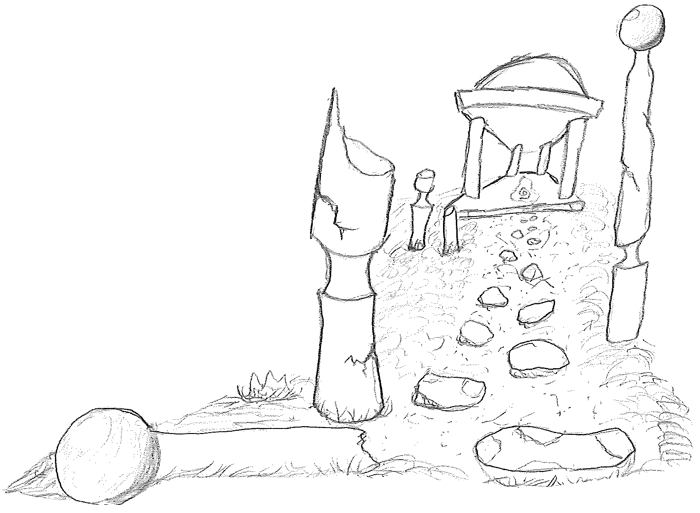
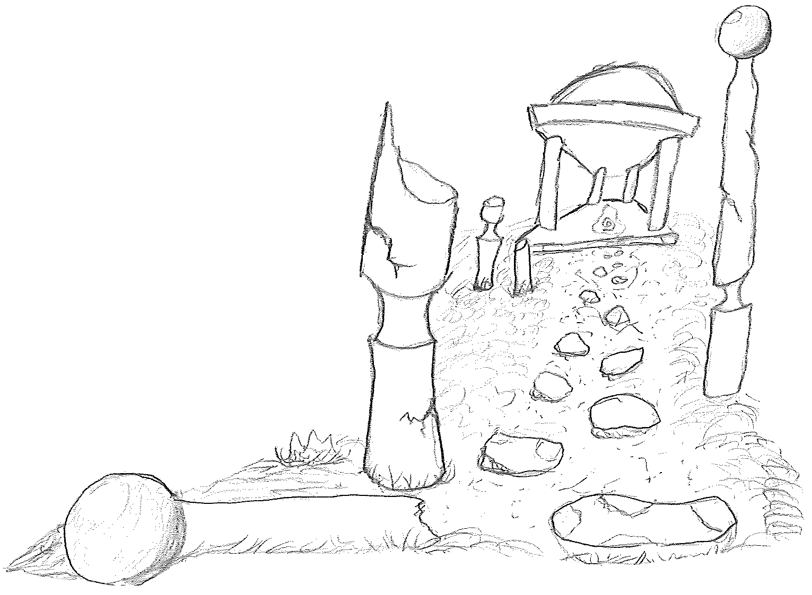

Look at that! You scared them two of them off! Now it's an easy kill! Zug Zug ended up making that hide after all, look at it! It reminds me of an arnament my friend Lexxar wears, weird guy. Looks like there some Ayleid ruins down in the valley, they normally have creatures such as demons, woodland creatures and the undead near them... Feel brave enough to explore it? Then there's a nice brush of trees you can explore as well if you aren't feeling like meeting something dangerous?